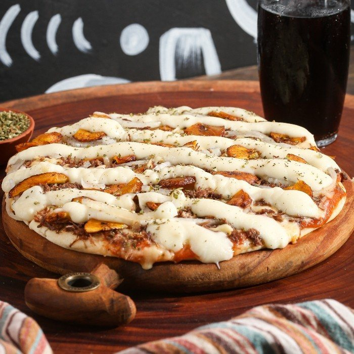
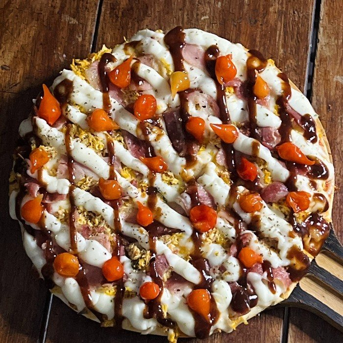
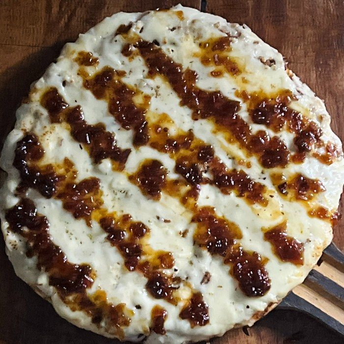

Especiais
Nordestina
Molho, mussarela, carne seca, cebola, catupiry original, banana frita e orégano.
PR$ 37,00MR$ 45,00GR$ 61,50FR$ 72,00
Início · Sabores com sotaque
Carne seca, charque, carne de sol, queijo coalho, camarão e pimenta biquinho. Os sabores da Oliks com cara de Salvador, mais a pizza que leva o nome da casa.
Da casa

O sabor premium que leva o nome da pizzaria: mussarela, frango, bacon, cream cheese, barbecue, pimenta biquinho e orégano. P R$ 42, M R$ 57, G R$ 84 e F R$ 97.
Do sertão

Molho, mussarela, carne seca, cebola, catupiry original, banana frita e orégano.
Molho, mussarela, charque desfiado, catupiry, pimentão, cebola e orégano.
Molho, mussarela, carne seca com cream cheese, alho-poró, pimenta biquinho e orégano.

Molho, carne de sol desfiada, queijo coalho grelhado e um toque de cebola caramelizada levemente apimentada.
Do mar
Molho, mussarela, camarão, alho-poró, catupiry, pimenta biquinho e orégano.
Base do molho caseiro Oliks, atum, lâminas de cebola, finalizado com orégano.
A Praiana também sai como calzone grande de 8 fatias, por R$ 86.
Molho
“Massa artesanal, base molho de tomate especial, tomate fatiado manjericão fresco finalizado com orégano”Descrição das pizzas no cardápio da Oliks
No sabor Atum, o cardápio fala em “delicioso molho caseiro oliks”. E na Calabresa Baiana, a pimenta calabresa vai junto com a cebola.
Cardápio
Tradicionais, especiais, premium e doces, com o preço de cada tamanho.
Ver todos e pedirDúvidas frequentes
É a faixa de preço do cardápio: na Grande, a especial custa R$ 61,50 e a premium, R$ 84.
Sim, o calzone grande Nordestina custa R$ 68.
Bateu a fome?
De quarta a segunda, a partir das 17h30. Monte o pedido no site ou chame direto no WhatsApp da casa.